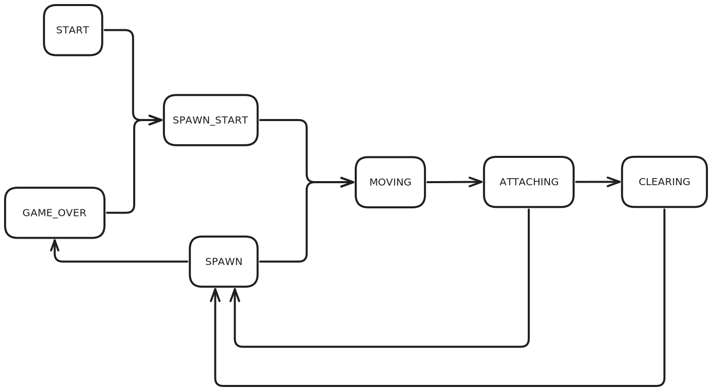

- Generated by
 1.9.8
1.9.8
|
Brick Game v1.0
Implementation of the game Tetris in the C programming language with a terminal user interface.
|
Implementation of the game Tetris in the C programming language with a terminal user interface.
"'Tetris' is an inventory management survival horror game from the Soviet Union in 1984."
— suckerpinch
The project consists of a library that implements the logic of the game. And a separate CLI application implementing the game's graphics and controls using the ncurses library.
The public interface of the library is described in brick_game.h.
Internally it is implemented using a Finite State Machine. Each update, the function responsible for the current state is dispatched. Certain conditions cause the current state to transition, such as the piece touching the ground or clearing a line.
The diagram of all the states and possible transitions can be found below.

The states are more thoroughly described in GameState
The CLI displays the game and captures inputs in a terminal using the ncurses library.
It is implemented using an MVC design. With CliController as the controller that runs the main loop, collects inputs, and updates the model. GameInfo_t is the model, describing the current state of the game that needs to be rendered, and CliView is the view that actually renders it.